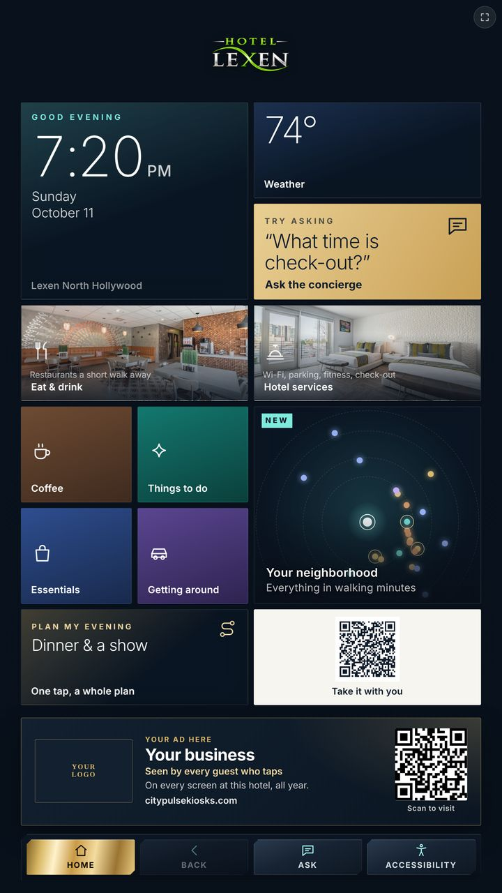

Live demo
Test the kiosk.
This is the real CityPulse software — the same screen guests use in the lobby at Hotel Lexen. Tap it, ask it a question, wander around. The ads are placeholders, so nothing you tap goes anywhere.
- Ask the conciergeTap the gold tile and ask “What time is check-out?” or “Where can I get coffee?”
- Plan an eveningTap “Dinner & a show” and get a whole plan in one tap.
- Explore the neighborhoodOpen the map and see what’s a short walk away.
- Find the ad spaceThe card along the bottom is where local businesses appear — on every screen.

Real touch screen: 1080 × 1920, portrait.
Every size
One screen. Five sizes.
Pick a size to see it to scale next to a 5′9″ person — on a counter, on the wall or standing on its own. The software and the ad space stay the same at every size.
Sizes shown are representative configurations, drawn to scale. The exact model, dimensions and mounting are confirmed for each venue during review.
Like what you tapped?
Put your business in the ad space, or put a kiosk in your lobby.